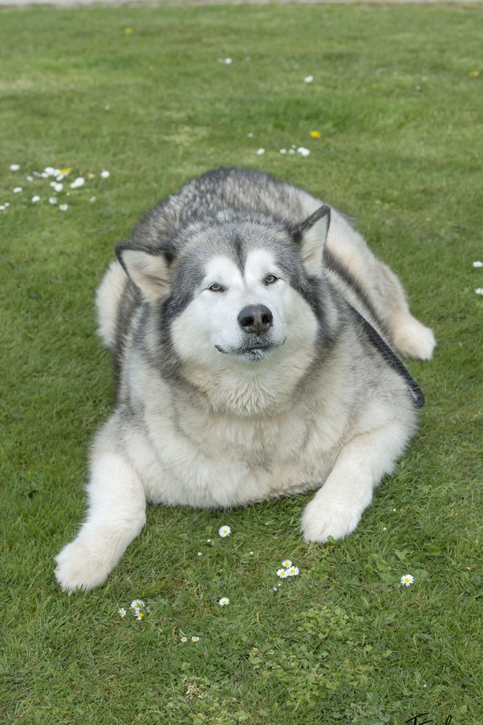

Class Pets
Rocket

Rocket is a tiny pomeranian with a larger than life attitude.
Chewy
Chewy is a certified good boy that loves his treats and the Michigan snow. He will be cutting back on the treats this spring to work on his summer bod.
Ma
Ma is a senior lady and the matriach of the course. All new pets who enroll in the course, complete their orientation with Ma.
Maple

Maple is a 2 year old cat who loves to play fetch and cuddle. She is a big fan of the holidays and loves to dress up for the occasion.
Cody

Cody is the class corgi that lives for the luxuries in life. Regular spa days, fresh pet food and cozy nights in by the fireplace are his favorite.